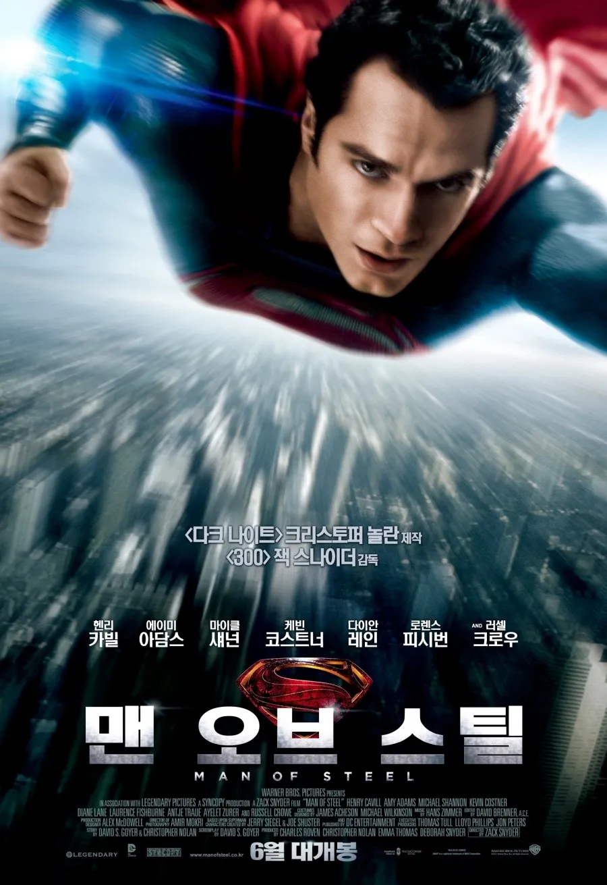
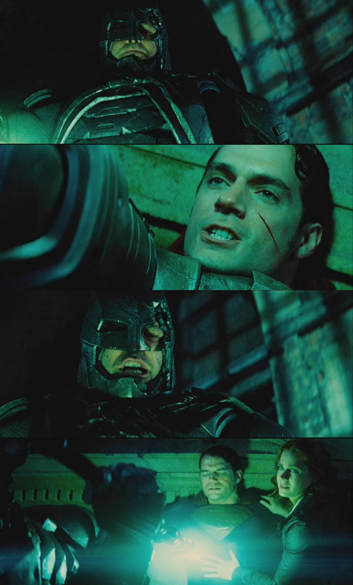

감독 : (상태좋은) 잭 스나이더
제작 : 크리스토퍼 놀란
음악 : 한스 짐머
슈퍼맨 : 헨리 카빌
정말 망할수없는 조합이었음

그걸 말아먹은 뱃대슈 느금마사는 덤이고
한줄요약 : 맨오브스틸은 한번 보는걸 추천함

감독 : (상태좋은) 잭 스나이더
제작 : 크리스토퍼 놀란
음악 : 한스 짐머
슈퍼맨 : 헨리 카빌
정말 망할수없는 조합이었음

그걸 말아먹은 뱃대슈 느금마사는 덤이고
한줄요약 : 맨오브스틸은 한번 보는걸 추천함
다 끝났으니 하는 말이지만 처음부터 그냥 잭 스나이더 3부작 했으면 차라리 상태 더 좋았을 듯
영화 만듦새와 별개로 잭스나는 욕심이 너무 많음 남의 캐릭터 남의 서사 다 뺏어오니까 여러 감독이 참여해야 하는 시네마틱 유니버스가 망가짐
잭스나이더는 첫작품은 잘뽑음 연속성 트릴로지로 가면 뇌절이 심해짐
잭스나이더 뇌절의 궁극은 서커펀치라고 생각함. 봤던기억을 삭제하고싶어짐 ㅋㅋㅋ
뇌절을 해도 지 혼자 뇌절하고 마무리하는 게 낫지 슈퍼맨 배트맨 플래시 사이보그 서사 (+ 마샨 맨헌터) 다 독식해버리니 시네마틱 유니버스의 의미가 없어짐 ㅋㅋ 그나마 덜 빨아먹힌 아쿠아맨, 원더우먼이 단독 히어로 영화로는 시리즈에서 가장 준수했던 것만 봐도
잭스나는 그냥 액션감독만.. 했으면함
빌드업이 중요한데 마블 따라하다 가랭이 찢어짐
맞긴함. 아이언맨도 1,2,3 으로 페이즈따라서 단독영화로 빌드업하면서 확장했는데 DC는 맨오브스틸 이후에 바로 확장유니버스 시도하다가 폭망했으니 ㅋㅋㅋ
액션밖에 없는 영화인데 슈퍼맨이 드래곤볼식으로 싸워서 맘에 안들었음. 애초에 난 잭스나이더가 싫음 300도 노잼 헨리카빌이 너무 아까움
오락영화로서는 괜찮은데 슈퍼맨 영화로서는 솔직히 별로임
슈퍼에 너무 치중함
놀란 배트맨 3부작 이후에 새로운 세계관 확장의 시작을 알리는 작품이었지
만듦새도 좋아서 지금봐도 훌륭한 오락영화라고 생각함
근데 이후 나오는 후속작들이 하나같이 창이 날줄은 아무도 몰랐지 ㅋㅋㅋ
"판권이 흩어진 것도 아님
인기없는 캐릭터들도 아님
전통없는 캐릭터들도 아님
영화 소재가 없는 것도 아님
영화 만들 기술력이 없는 것도 아님
좋은 시나리오 쓸 능력이 없는 것도 아님
스튜디오에 돈이 없는 것도 아님
영화를 처음 만들어 보는 것도 아님
솔로무비를 만들면 안 되는 이유가 있던 것도 아님
급하게 만들어야 할 이유가 있던 것도 아님
장르특성상 안 팔리는 영화도 아님
망할래야 망할 수가 없는 상황에서 지대로 말아먹음"
누가 쓴 댓글인데 정말 명문임 ㅋㅋㅋㅋ
정답 히오스
군대 상병 시절 휴가나와서 맨 오브 스틸 보고
‘드래곤볼을 실사판으로 만들면 이런 느낌이겠다’
싶었음
어릴적 비디오로 봤던 베지터 VS 계왕권 3배 손오공
실사판으로 보는 느낌
나도 딱 이랬음. 드래곤볼을 실사판.
그런 당신에게 드래곤볼 에볼루션을
파오라였나 그 장면은 히어로 무비 액션 goat라 생각
엄마로 뭉친 동맹같은거였나? 너무 오래되서 기억이 안나네
딱하나 문제가 뭔가 이제쯤 끝나겠지 싶은 상황인데 어거지로 안끝내고 질질 끄는 느낌이 조금 있어서 살짝 보다보면 피곤하더라
액션씬 개쩔긴한데 자꾸 어디 건물벽에 긁고 땅바닥에 내려치고 이런거 볼때마다 이 새끼들 기준으론 극세사 천에 얼굴 문지르고 솜바닥에 내려치고 이런거 아닌가? 걍 주먹으로 치는게 더 아픈거 아닌가? 생각이 들었음
이거 액션원툴 개병신 영화인데
개노잼 스토리에 몰입도 안되고
가끔 사람들이 액션씬 잘 찍었다고 움짤따서 보여주는데
그게 이 영화의 끝임
조드장군 연기는 개쩔었어
막아야 하는 폭발을 그냥 피해버리고 뒤늦게 당황하는 슈퍼맨 짤
똥믈리에라 그런가 배대슈 너무 좋아 10년이나 빨다 보니 웬만하면 안 긁히는데 더 마블즈,토르4보다 쓰레기란 말은 약간 좀.. 긁힘
액션은 좋음 액션은.. 초인들의 전투란 이런 것이다의 교본
플래시는 꽤 잘만든거 같은데 왜 망했는지 이해가 안가드라
개봉직전에 주연배우가 강도,살해협박,미성년자 그루밍 이렇게 대형폭탄 터트림. 근데 dc입장에서는 재촬영도 불가능하고 개봉 강행했음 그리고 폭망
그 사건 나도 아는데 솔직히 그게 그렇게 큰 영향줬다고는 생각 안함
그사건자체보단
그사건+여러이유로 유니버스 샤따내린거때문에
뭣하러 시간아깝게 후속작도 안나올 시리즈물을 보냐
이마인드로 안본사람 많음
영화 자체도 그닥.
잘 만들긴 했음. 주인공 성장 서사 전부를 무의미하게 만드는 결말 빼고.
결말이 너무 좆박았어. 주인공이 반성 없이 또 같은 사고 쳐서 이야기 꼬아버린 채 끝난 거 보고 내가 이 영화를 왜 봤을까 허탈했음.
진짜 잘 가다가 결말에서 확 고꾸라져서 어이가 없었음.
뛰는폼이 너무 멋대가리없는것도 한몫하는듯
저스티스부터 대사나 캐릭터들을 병신마냥 만들었는데 볼맛이 생기나 ㅎ
난 마이클 키튼 배트맨 나와준거만으로 오줌지림
라틴계 여자 슈퍼맨도 존자 좋았음
슈퍼걸도 좋았고 마이클키튼의 배트맨은 최고였지....
단독 한편으로는 괜찮은데 당시 마블의 시리즈물을 따라하고 싶었던 디씨 입장에서는 최악의 영화였을거임. 슈퍼맨의 전능자로서의 면모를 너무 강하게 보이는 바람에 팀웍 무비판은 그냥 박살나버렸음. 슈퍼맨이 있는데 니들이 뭐가 필요하지? 라는 굴레에 박힘.
최근 슈퍼맨은 이거 뒤집으려고 인간성을 강조하는 바람에 팀웍무비로서의 준비는 갖췄으나 반대로 전능하지 않은 슈퍼맨은 다른 히어로와 도대체 뭐가 다른거임? 이라는 함정에 빠짐. 사실상 마블의 드렉스와 그루트의 포지션, 힘쎈 바보 역할이 되어버림.
이런 전능자 캐릭터를 다루는 정석은 원펀맨의 사이타마인데 저스티스 리그에서 비슷한 플롯을 시도하긴 했음. 문제는 원펀맨 플롯은 주변인물들이 파워를 제외하고는 캐릭터성과 매력이 사이타마(대머리)에 비해 압도적으로 뛰어나면서 빌런의 강력함에 의한 긴장감을 잘 유지해야되는데 2시간 분량에 이전 시리즈도 부족했던 영화에서 가능한 서사가 아님.
슈퍼맨=헨리카빌,배트맨=벤 애플렉,원더우먼=갤 가돗,플래시=에즈라 밀러,아쿠아맨=제이슨 모모아,할리퀸=마고로비,메라=엠버허드,조커=자레드 레토등 이렇게 원작 캐릭터랑 닮은 배우들을 데리고 왔음에도 불구하고 망했다는게 참 신기하다
드래곤볼식 전투 멋있긴함
모든게 완벽했다기엔 각본이 별로였음
개봉 당시에는 평가 별로였는데 뒤이어서 DC가 다 좆박으니까 이게 이렇게 재평가 받게 되는구나ㅋㅋㅋ
좋은 소재라고는 하지만 히어로 유니버스에서 슈퍼맨이 좋은 소재는 아닌 듯
마블은 토르가 제일 쎄도 파밸이 얼렁뚱땅 맞춰지는데 dc는 슈퍼맨 미만 잡이잖아?
거기에서 근본적인 한계가 오는 듯
슈퍼맨은 너무 슈퍼해. 언제까지 크립토나이트 원툴로 갈 수도 없는 노릇이고
슈퍼맨이 외계인장군인가? 걔한테 감히 우리 엄마를 건들여하면서 한 1킬로 줘패면서 날라가는 씬 기억남
10년 걸린 마블 서사를 자기들은 3~4년안에 보여줄려고 하니 망했지 차근차근 각각 솔로작 착실하게 준비했으면 몰랐응거라고 봄
명량이 최대 1550개 스크린을 확보해서
1700만 관객을 동원하니까
한국 영화는 스크린 독점으로 흥행한다고
개지랄들을 쳤는데...
사실 명량은 1150개 스크린에서 시작했다가
장사가 잘되니까 점차 상영관을 늘린거였음
반면에 저 영화는
처음부터 명량보다 500개나 많은1700개
상영관을 잡아서 시작했는데
대부분 극장이 텅텅비고
촤종 관객 꼴랑 200만 들었음
배댓슈, 저스티스리그는 무조건 감독판 봐야한다.
봤는데 그냥 늘린거밖에 안됐음
난 그닥이었는데 그래도 전투씬은 좋았음